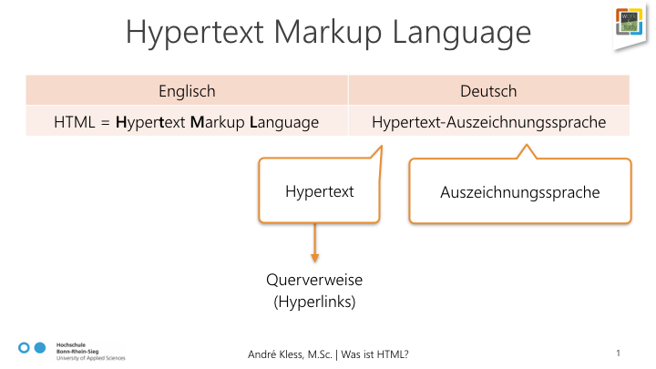
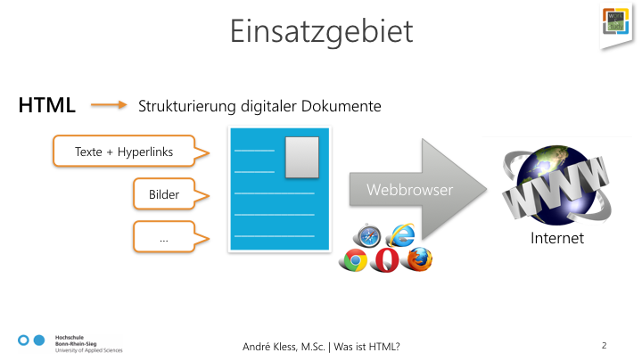
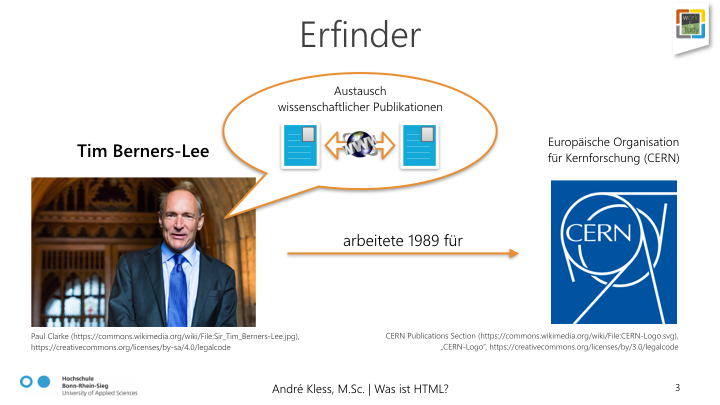
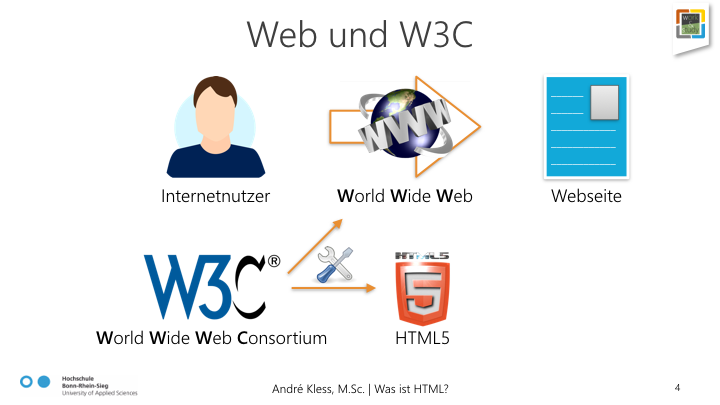
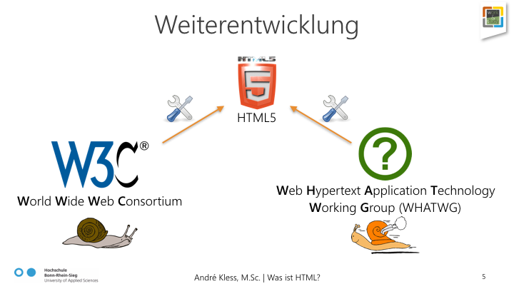

To the extent possible under law, André Kless has waived all copyright and related or neighboring rights to this work.
Das Internet hat vieles verändert. Wie selbstverständlich surfen immer mehr Menschen im Internet und nutzen es längst nicht mehr nur um sich Wissen anzueignen, sondern beispielsweise auch um zu shoppen, zu spielen, Filme zu schauen, sich mit anderen zu vernetzen und alle möglichen Dienstleistungen in Anspruch zu nehmen. Um im Internet vertreten zu sein bedarf es einer Webseite, die Internetnutzer über ihren Webbrowser aufrufen können. Aber wie entsteht eigentlich so eine Webseite? Kann man das auch selber machen? Ja natürlich, das geht! Das erste was man dafür kennen muss ist die Muttersprache des Internets: HTML. In dieser Lerneinheit erfahren Sie was HTML ist, wofür es steht und eingesetzt wird und von wem es zu welchem ursprünglichen Zweck überhaupt erfunden wurde. Anschließend erfahren Sie wer an der Weiterentwicklung von HTML arbeitet und in welcher Version HTML aktuell vorliegt. Was sollten Sie an Wissen mitbringen? Nun, um zu verstehen worum es hier geht sollten Sie zumindest schon wissen was das Internet, ein Webbrowser und was eine Webseite ist. Kurz gesagt: Sie sollten bereits Erfahrungen mit der Nutzung des Internets, sprich mit dem Besuchen von Webseiten im Internet, haben.
Das Internet ist das größte Netzwerk der Welt, das internetfähige Geräte miteinander vernetzt, wodurch diese dann in der Lage sind Informationen bzw. Daten auszutauschen. Wir Menschen nutzen das Internet üblicherweise über einen Webbrowser, bei dem es sich um ein Computerprogramm handelt, über das wir im Internet veröffentlichte Webseiten aufrufen können. Wenn man also selbst eine Webseite veröffentlicht, können die darauf präsentierten Inhalte von jedem Menschen in der Welt, der über ein internetfähiges Gerät verfügt, mit Hilfe eines Webbrowsers abgerufen werden.
HTML steht für Hypertext Markup Language. Das ist Englisch und die Übersetzung ins Deutsche verrät uns, dass es sich hier um eine Hypertext-Auszeichnungssprache handelt. Doch was bedeutet das? Nun, Auszeichnungssprache bedeutet, dass es sich hier um eine Sprache handelt, die von einer Maschine gelesen werden kann und zur Gliederung und Formatierung von Texten und anderen Daten dient. Hypertext bedeutet, dass diese Texte auch Querverweise, sogenannte Hyperlinks, enthalten können, durch die man direkt zu anderen Textstellen im selben oder in anderen Hypertexten springen kann.
In der Praxis wird HTML zur Strukturierung digitaler Dokumente eingesetzt, die Texte mit Hyperlinks, Bildern und viele andere digitale Elemente enthalten können. Ein in HTML erstelltes digitales Dokument kann von einem Webbrowser gelesen werden, der uns dann deren Inhalte, so wie wir es im Internet kennen, schließlich als Webseite darstellt.
Wer hat sich dieses HTML überhaupt ausgedacht? Nun, als Erfinder von HTML gilt der britische Physiker und Informatiker Tim Berners-Lee, der zu dieser Zeit im Jahr 1989 für die Europäische Organisation für Kernforschung (CERN) in Genf arbeitete. Sein ursprüngliches Ziel war es wissenschaftliche Publikationen mit Kollegen anderer Standorte austauschen zu können. Darüber hinaus legte er damit einen wichtigen Grundstein für das Internet, so wie wir es heute kennen und nutzen.
Durch das World Wide Web (WWW, oder kurz Web) können wir mit einem Webbrowser, der mit dem Internet verbunden ist, jede im Internet zugängliche Webseite laden und uns deren Inhalte anschauen. Für die Weiterentwicklung des Webs und deren Standards gründete Tim Berners-Lee im Jahr 1994 das World Wide Web Consortium (W3C). Dieses Gremium ist auch heute noch für die Entwicklung technischer Spezifikationen und Richtlinien für das Web verantwortlich und somit auch für die Weiterentwicklung und Standardisierung von HTML. Eine Standardisierung ist vor allem deshalb von zentraler Bedeutung, damit die verschiedenen Webbrowser ein in HTML geschriebenes digitales Dokument nicht unterschiedlich interpretieren. Ohne Standardisierung müssten wir unser HTML sonst, je nachdem welcher Webbrowser zur späteren Darstellung verwendet wird, unterschiedlich schreiben.
Da die Weiterentwicklung von Web-Standards beim W3C nur sehr langsam voran geht, wurde im Jahre 2004 die Arbeitsgruppe Web Hypertext Application Technology Working Group (WHATWG) gegründet, die ebenfalls unter Anderem an der Weiterentwicklung von HTML arbeitet und der auch die führenden Hersteller von Webbrowsern mit angehören. Die WHATWG setzt das W3C allerdings nicht ausser Kraft, sondern erarbeitet viel mehr Vorschläge für neue Web-Standards, die dann beim W3C eingereicht werden. Die aktuellste Version von HTML, die von der WHATWG ausgearbeitet und dem W3C vorgelegt wurde, ist HTML5. HTML5 bringt viele neue Elemente und Funktionen mit sich, die uns das Erstellen von Webseiten erheblich erleichtern und von allen gängigen Webbrowsern bereits weitgehend unterstützt werden.
Alternativer Einstiegspunkt zur Frage "Was ist HTML?" mit vielen weiterführenden Links.
Link: https://de.wikipedia.org/wiki/Hypertext_Markup_Language
Behandelt auch die Fragen was HTML ist, wofür es steht und wofür man es verwendet.
Link: http://de.html.net/tutorials/html/lesson2.php
Weiterer alternativer Einstiegspunkt. Nach einem Klick auf "Einführung in HTML" gibt es noch weitere Infos zur Geschichte von HTML und von wem es weiterentwickelt wird.
Link: https://developer.mozilla.org/de/docs/Web/HTML
To the extent possible under law,
André Kless
has waived all copyright and related or neighboring rights to
this work.